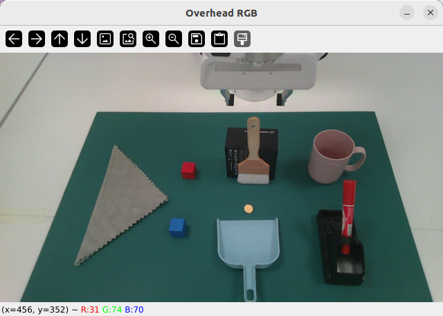
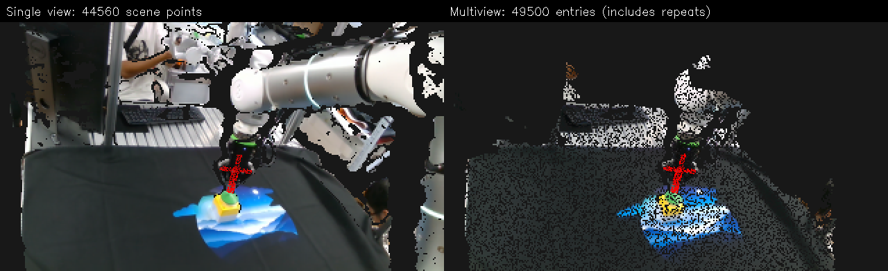
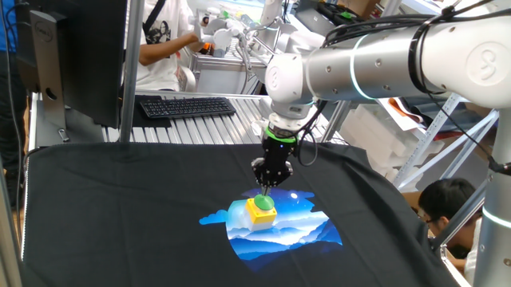

World-Flow
Embodiment-agnostic task motion represented as a structured SE(3) trajectory in the world frame.
UMR decomposes manipulation into World-Flow and Ego-Trajectory, coupling transferable object motion with executable robot-local actions.
UMR describes the same manipulation motion from two coupled coordinate views. World-Flow captures transferable object-level motion in the world frame, while Ego-Trajectory expresses the executable end-effector motion in the current gripper frame. An SE(3) conjugate transformation links both streams, so a task learned from human demonstrations can be converted into robot-local actions at deployment.
Embodiment-agnostic task motion represented as a structured SE(3) trajectory in the world frame.
Controller-aligned end-effector motion represented relative to the current pose for execution.
A compact 0.5B point-cloud VLA with dual-stream Point Action Adapters and a shared Point Action Expert.

WEP-VLA instantiates UMR as a compact 0.5B-parameter point-cloud VLA. The policy learns coupled World-Flow and Ego-Trajectory supervision, then executes the ego-frame action stream at inference.
Mean success across 10 tasks, outperforming PointACT (82.3%) while using a smaller 0.5B model.
Average success across Spatial, Object, Goal, and Long-Horizon suites with 10 train tasks.
World-Flow captures transferable task motion; Ego-Trajectory provides executable robot-local control.
| Benchmark | Model | Model Size | Mean / Avg. Success |
|---|---|---|---|
| RLBench 10 tasks | HybridVLA | 7B | 74.0 |
| RLBench 10 tasks | PointACT | 3B | 82.3 |
| RLBench 10 tasks | WEP-VLA (Ours) | 0.5B | 85.7 |
| LIBERO 4 suites | PointACT | 3B | 96.0 |
| LIBERO 4 suites | OpenVLA-OFT | 7B | 97.1 |
| LIBERO 4 suites | WEP-VLA (Ours) | 0.5B | 97.5 |
| Method | Type | Cube | Mug | Money | Micro | Avg. |
|---|---|---|---|---|---|---|
| Pi0.5 | Finetune | 74 | 85 | 54 | 16 | 63.03 |
| SPOT | Postprocess | 86 | 95 | 67 | 33 | 75.91 |
| HumanEgo | Postprocess | 71 | 73 | 48 | 14 | 60.69 |
| WEP-VLA (Ours) | End-to-end | 100 | 100 | 92 | 85 | 96.17 |
Full UMR average on LIBERO, compared with 81.65 for the original action interface.
Cube stacking, trash sweeping, mug rack, towel folding, and cross-robot variants.
Human demonstrations are mapped to a virtual parallel-jaw gripper for robot execution.
The UMR_NEW dataset media contains 26 RGB demonstration episodes across RH20T, LIBERO, RLBench, DynamicCube, and StageGenMerged. These clips show the diversity of manipulation sources used to stress-test a shared World-Ego action representation.
Real RGB-D manipulation demonstrations, including pressing, napkin pulling, and drawer opening.
Spatial, object, goal, and long-horizon tasks reconstructed as RGB-D demonstrations.
Simulation skills spanning articulated objects, grasp manipulation, tool use, and watering.
Dynamic cube stacking examples for spatially grounded object motion.
Synthetic and merged demonstrations for towel folding and trash sweeping.
Attach-but-fall behavior retained for strict qualitative review and paper discussion.
Pick a scene below to view RGB-D inputs, prediction, and ground truth.
NOTE: Prediction shows single-view filtering; the reference viewer shows multiview reconstruction.






UMR review samples are served through the interactive section.
This hidden template can be re-enabled when final annotation assets are available.
UMR targets long-horizon manipulation under embodiment changes, spatial perturbations, and contact-rich interactions.